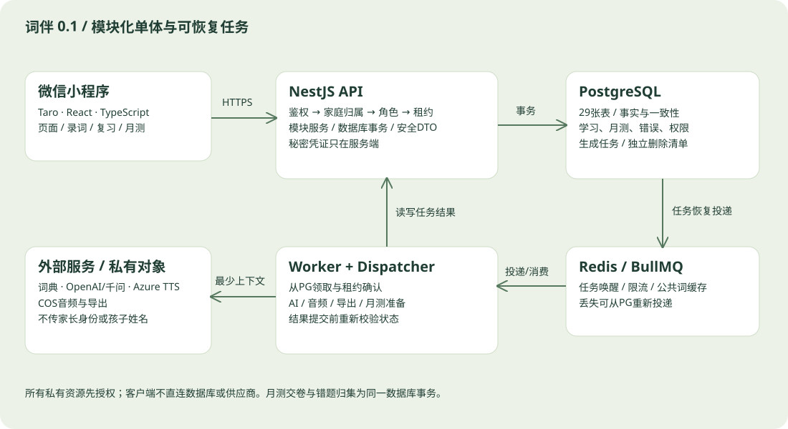

WORDMATE / 词伴 · 0.1 · 2026-10-20
技术架构与权限设计
选择统一TypeScript栈降低前后端沟通成本；数据库承担事实、一致性和隔离，外部AI只生成候选内容。

技术栈选型
| 层级 | 技术 | 用途 |
|---|
| 小程序 | Taro + React + TypeScript | 小程序页面、类型契约及平台适配 |
| 界面 | SCSS + 自定义组件 | 遵循46张图与设计token |
| 后端 | NestJS + TypeORM | 模块化单体、显式事务、服务端权限 |
| 数据 | PostgreSQL 16基线 | 复合外键、唯一索引、JSONB及事务 |
| 任务/缓存 | Redis + BullMQ + PG outbox | 外部AI任务可恢复、限流 |
| 算法 | ts-fsrs | 四级反馈，冻结库和参数版本 |
| 文本AI | 千问API适配器 | 结构化生成例句/题目，双层验证 |
| 语音 | Azure Speech TTS适配器 | 按真实音色目录选择英美发音 |
| 词典 | 授权词典Provider | 来源、义项、音标明确，待账号/授权接入 |
| 对象存储 | 腾讯云COS私有桶 | 音频与导出，鉴权读取 |
| 部署 | Docker + HTTPS反向代理 | API/Worker分进程、环境隔离 |
总体架构与边界
采用模块化单体：一个NestJS HTTP API进程、一个Worker进程，共享同一PostgreSQL；Redis用于BullMQ任务投递、限流和允许缓存的词典内容。微信小程序只调用自有HTTPS API，不直接连接数据库或AI供应商。初期无需微服务、搜索集群或向量数据库。
模块：Auth、Family、Child、Vocabulary、Dictionary、Sentence、Audio、Study、Calendar、Mistake、Quiz、Export、Audit、Lifecycle。模块只通过显式服务接口协作；通用事务上下文共享数据库连接，避免各模块自行commit。
前端选型与组织
Taro + React + TypeScript，SCSS及自定义组件，pnpm workspace。Taro适配微信小程序，使用Taro请求/导航及微信能力适配层，不直接依赖浏览器DOM。React局部状态+Context处理孩子选择、令牌和播放控制；异步请求封装统一类型、错误、取消、重试与版本冲突。初期不引入额外全局状态库。
目录：apps/miniapp/src/pages、components、features、services、stores、styles；packages/contracts从OpenAPI生成类型；统一idempotency、UTC/日期转换及错误码。四个Tab：今日、单词本、日历、我的；子页按词库、学习、月测、家庭分包。
API base URL按dev/staging/prod配置；token放本地存储并在注销清除，日志不记录token；本地缓存按user/family/child命名，切换或退出清除私有缓存。下载音频落临时文件，播放结束或过期清理；月测每次保存确认后才显示已保存。
后端、数据库和依赖基线
NestJS + TypeScript；TypeORM用于Repository与事务，复杂队列/约束使用参数化SQL；migration管理本交付DDL，synchronize=false。PostgreSQL部署基线16（安装受支持补丁版本）；Node选在实施时受支持的LTS，Taro/React/Nest/TypeORM/ts-fsrs/BullMQ锁定兼容版本与lockfile，不能在正式构建使用浮动latest。
数据库包含29张表，初始SQL只供空库。SQL是约束的唯一来源，ORM实体必须映射已有复合外键与部分唯一索引，不能自动删改。读写UTC、timestamptz；业务日历固定Asia/Shanghai；主键UUID。应用账户仅需业务表DML，迁移账户单独使用，生产不暴露公网数据库端口。
AI、词典和语音供应商
文本生成默认接阿里云百炼千问API，走SentenceGenerator/QuizGenerator适配器；选支持结构化JSON输出的文本模型，部署配置AI_MODEL固定具体模型ID，上线前用样本集评价词义、难度和自然度，不把模型别名写死在小程序。
语音默认Azure Speech TTS，按目标区域实际返回的en-GB/en-US音色目录提供选择，TtsProvider隔离供应商和voice_id。必须实际试听同形异音词、短语和句子；音标来自词典，不由TTS反推。若供应商区域/账号不满足要求，更换适配器而不是静默切口音。
词典需要获得可商用、可缓存中英义项/音标的授权数据或API。当前未提供授权账号，不能声称已完成采购或可任意抓取。DictionaryProvider契约已确定：lookup、normalize、getSense、getPronunciation；词条ID及义项ID保留来源。无授权词典时开发用fixture，正式上线前必须替换，该项尚未验证，必须在核心业务开发初期完成接入验证，不能等到上线前才选择。
模型输入、验证与成本控制
模型仅接收所需词义、主题、难度和句子，不发送家长微信身份、孩子姓名或完整学习日志。用户输入作为数据字段，模型不能执行工具或决定数据库写入。返回JSON先做Schema校验，再检查词覆盖、位置、长度、义项及内容；不合格重试最多2次，仍失败标记任务失败/部分完成。
例句生成任务分小批，以义项覆盖为单位记录完成情况；月测题生成可分块但全部准备完才ready。候选干扰项使用已验证词义和生成建议，排除重复及同义正确项；自动检测无法保证教学绝对正确，需要纠错入口和上线样本审核。
任务按家庭/孩子限额：默认每孩子每日30次例句生成、300次新音频合成、5次月测创建，词典查询每用户每分钟60次；配置可调整，429附Retry-After。缓存命中不调用供应商；预估token、实际用量、任务attempt和供应商请求ID入运维指标，禁止原始提示词包含个人身份。
可靠任务与Redis失效策略
generation_jobs是任务持久化事实及outbox，同业务事务写入queued。dispatcher轮询数据库，用任务UUID作BullMQ jobId投递；重复投递只唤醒同一逻辑任务。Worker通过PostgreSQL条件UPDATE及lease_until取得执行权，不能只信Redis状态。结果与任务状态同事务提交。
Redis丢失时由数据库重新投递；Worker崩溃由租约超时回收；部分结果使用唯一缓存键去重。供应商调用无法参与数据库事务，支持时传幂等键，不支持时可能重复计费；限次重试并记录这一边界。取消、删除孩子或放弃月测时，Worker最终写回前重查目标状态，不能复活已取消任务。
删除任务使用独立lifecycle_jobs由专用Worker轮询领取，不依赖被删目标的generation_jobs；恢复和重试遵循删除章节。
查任务接口只返回安全摘要，绝不透传payload/正确答案。月测failed后retry需确认没有另一份活动月测；prepared题和抽样固定，不重新抽词。
登录、授权与数据隔离
wx.login的code由后端通过微信官方登录服务换取openid；AppSecret与session_key只在服务端。自有Bearer令牌为32字节随机值，仅保存SHA-256哈希，初始有效期7天；过期重新微信登录，不设计长期无撤销JWT。
AuthGuard→FamilyScopeGuard→资源归属校验→角色/操作者检查。任何child_id/word_id/quiz_id都必须从数据库追溯家庭有效成员；不能相信客户端family_id或actor_user_id。跨家庭返回404，同家庭角色不足403。资源复合外键防止跨孩子写关联，但不代替读授权。
所有写入按家庭→孩子→测验（如有）→会话→队列项/题目→卡片的顺序加锁；成员移除也锁家庭，避免检查权限后被移除仍写入。只读查询用单条加入membership条件的SQL或一致快照；流式下载前再次鉴权，私有对象URL不外泄。
复习事务与FSRS参数
使用ts-fsrs，在服务端构建完整Card状态并按again/hard/good/easy计算下一状态。scheduler_version与parameter_version写卡和日志；库升级不能将旧JSON盲目反序列化，先迁移验证。初始desired_retention=0.90，参数固定，不依据少量数据宣称个体最优。
提交：授权→查询event_id是否已存在→锁孩子/会话/队列/卡→再次检查事件→验证租约/代次/expected_version→写卡（正常复习才+1）→日志→again写mistake_events→每日义项去重/汇总→标队列项已答→响应快照→commit。相同事件不同payload返回409。
practice_only前后版本相同，正常评分后版本+1，数据库CHECK覆盖两者。新词是否已学由历史事实判定，不能因本次标注简单而绕过新词额度。会话新词使用孩子锁串行计算未用额度；评分前再次检查归档和卡状态。
月测事务与冻结数据
创建时锁孩子、核对无活动月测；从daily_word_activity按月取义项ID去重，排除归档；按mode生成固定顺序。candidate_word_ids去重、total_count、每题word_snapshot和grading_rule_snapshot必须原子保存；preparing期间Worker仅填题干/选项，不再读当前词义替换快照。
答题保存锁同一测验后锁题；expected_version指题answer_version，返回quiz_version；交卷先锁测验，避免读到部分更新。答案只能是本题冻结选项。提交统一未答判错，并验证每题选项和答案准备完整；按整数比较90/80/60阈值，score仅为显示派生值，不独立存浮点分数。
同事务把is_correct、最终计数/等级、错误事件及submitted写入并结束会话；重复提交先检查submitted，经授权返回同一结果。数据库的等级CHECK防止计数与等级矛盾；题目总数与父表数量、候选去重仍需应用事务校验，不能声称SQL自动覆盖全部业务规则。
词典/音频缓存、文件与导出
COS私有桶存学习音频和导出，路径按环境/child/资源ID，不使用真实姓名。API代理鉴权下载，或短期内部签名不直接做长期分享；audio资源内容版本落后返回409/410。词典音频是公共词条缓存，不混入孩子句子，不复用孩子私有缓存键。
Redis缓存只保存授权允许的公共词条、目录和音频资源索引，设置TTL并保留来源；私有学习数据读写以PostgreSQL为准。句子修正递增content_version；词义/音标修改递增word.version，音频命中必须完全匹配。
清单导出事务固定IDs与输出字段快照，CSV逐格转义双引号、换行与分隔符，对去除前导空白后以=+-@起始的值作文本安全处理。24小时后删除对象、任务摘要保留审计；下载鉴权按scope区分清单与完整数据。
前端同步、错误码与幂等
所有写操作除登录和明确只读POST之外带Idempotency-Key，保留24小时；相同键不同请求hash返回409，处理中返回409 REQUEST_IN_PROGRESS/Retry-After。review.event_id与月测submitted长期去重，不只依赖Redis。刷新页面不要生成新的事件ID重放已保存反馈。
401清理token并登录；403隐藏不可用操作并解释角色；404资源不存在/无权；409提示同步或接管；410导出/资源过期；422展示逐项业务原因；429/503退避。错误回包统一request_id和业务code；严禁向客户端回传SQL、堆栈或供应商密钥。
小程序onShow重新检查当前家庭、孩子、active_session和月测版本；后台暂停心跳，不承诺长时间持锁；被接管后切只读。未同步答案只留当前设备并提示，与服务端冲突时由用户选择刷新，不能自动覆盖家人答案。
部署、环境与可观测性
开发、测试、生产分别使用微信AppID、数据库、Redis、COS桶和供应商凭证；API与Worker通过Docker构建，反向代理提供HTTPS，域名与小程序后台合法域名配置一致。初期可采用一台应用服务器加托管数据库/Redis，数据盘与备份独立；容量依据压测再定，不承诺未经测量的在线人数。
日志包含request_id、operation、匿名化user/child标识、任务状态和错误码，不包含openid、token、邀请凭证或整份孩子数据。指标覆盖P95、错误率、连接池、队列延迟、供应商失败率/用量、音频命中率、quiz准备/交卷耗时；错误告警走部署方现有渠道，不由原型发送通知。
目标（待实现压测）：普通读写P95<500ms，交卷100题P95<2s；全量10000题异步准备、分页读，交卷按10s预算压测；外部AI/TTS不纳入普通接口延迟指标。每日备份、保留7–30天可配置；上线前演练恢复，目标RPO≤24h、RTO≤4h，仅为验收目标。
删除、留存与隐私
注销仅匿名化家长身份并撤销全部令牌，不隐式删除家庭。拥有家庭时409 OWNER_TRANSFER_OR_DISSOLVE_REQUIRED；可转交管理员，或在本人为唯一有效成员时解散。解散请求须确认家庭名称、expected_version及明确的数据删除确认；家庭锁内重验成员数，有其他有效成员返回409 FAMILY_HAS_OTHER_MEMBERS。其他家庭不受影响，全部管理员职责解除后才可注销。匿名化wx_open_id为不可逆随机占位值，清空展示名，保留内部UUID承接历史；重新微信登录创建新账号。
孩子删除与家庭解散都在业务事务中冻结目标、撤销答题租约/邀请、取消生成任务，并创建lifecycle_jobs。家庭deleting或孩子archived后拒绝全部业务写入，Worker最终写回也必须检查；可导出数据应在确认删除前完成，冻结后不再开放业务下载。独立删除任务只保存发起者、历史目标UUID、阶段和错误码，不外键引用被删家庭或孩子；GET /lifecycle-jobs/{job_id}只按requested_by本人鉴权，越权404，不依赖目标仍存在或成员仍有效。
阶段freeze→objects→records→complete；先删除私有桶目标前缀对象（不存在视为成功），完成后才清理数据库，失败不恢复学习状态。任务租约120秒，每30秒续租；Worker写回使用lease_until条件检查，旧Worker失去租约后不能推进阶段。自动重试最多3次；failed可由发起者显式retry，仍用原任务ID并清零本轮attempts。重复删除返回原任务；同目标不同请求键也不新建任务。家庭删除与孩子删除通过家庭锁串行化，已有未完成孩子删除返回409 DELETION_IN_PROGRESS，先完成或重试该任务。
数据库清理在事务中执行：study_session_items、mistake_events、monthly_quiz_items、review_logs、study_sessions、monthly_quizzes、daily_word_activity/daily_activity、review_cards、audio_assets、word_corrections/word_annotations、sentence_targets、sentences、batch_items、wordbook_words、batches、child_words、wordbooks、generation_jobs、children。家庭解散再删family_invites、audit_logs和family_members/families（使用延迟管理员外键），同事务标记删除任务succeeded与completed_at；任务记录不在删除范围。删除清单需独立增量备份到受限运维存储，不与待恢复业务快照一起回滚；恢复到删除前备份时先加载最新清单再重放lifecycle_jobs，恢复服务前验证目标未复活；成功记录至少保留30天且超过最长备份保留期后才清理，未完成记录不按TTL清理。注销前存在本人未完成删除任务返回409 DELETION_IN_PROGRESS。
孩子昵称即可，不采集生日或学校；不向模型发送身份。云端设计上传需指定个人项目并核对权限，本交付仍只在本地。
开工验收清单与未验证项
工程初始化须固定Node、pnpm、Taro、React、Nest、TypeORM、ts-fsrs和BullMQ的兼容版本，提交package.json与lockfile；干净环境按锁安装、编译和契约生成通过后才标记完成。当前交付为设计与检查源码，不虚构业务工程已经初始化。
词典接入负责人需确认义项ID稳定性、中文释义/音标、缓存与导出授权范围，并记录选型证据；无法授权导出时必须调整供应商或功能契约，不能直接上线。AI_MODEL及英美voice_id必须固定实际可用值；用20组包含多义词、短语、变形、无结果及同形异音词的样本，验证查词→确认→例句→双口音播放→月测，记录延迟、失败和费用。当前账号、授权及实际接入仍待提供，先用明确标记的fixture。
FSRS库固定后提交parameter_version、完整参数JSON、固定时钟/种子（或关闭fuzz）的调度基准样例：new/learning/review/relearning各状态四种评分，跨日、逾期、额外练习不改卡以及升级回放；不在文档中猜测库的具体到期值。权限验收必须包含唯一家长解散注销、其他家长不能改例句、删除后任务可查、失败重试及恢复备份后重放删除。以上均需真实服务实现后验收，当前SQL和原型测试不代替它们。
实施顺序与上线条件
按依赖推进：身份/家庭/数据库迁移→录词/词典/标注/纠错→例句/TTS→FSRS/租约/错题/日历→月测与交卷→导出/海报→真机、并发、异常与恢复演练。它们全部属于0.1，不另起功能版本。
已补齐评审发现的生命周期和权限规则；工程及供应商验收清单仍需执行。上线前仍需实际AppID与域名、供应商账号和词典授权、可用音色试听、模型质量样本评估、实际服务实现与安全/性能测试。不能把文档测试通过当作生产系统验收通过。
权限矩阵
| 操作 | 家庭管理员 | 普通家长 | 待审批 / 外部用户 |
|---|
| 查看孩子/单词/学习历史 | 允许 | 允许 | 拒绝 |
| 修改学习设置、录词、标注 | 允许 | 允许 | 拒绝 |
| 开始复习或月测 | 允许；需租约 | 允许；需租约 | 拒绝 |
| 提交答案/续租 | 仅当前持有人 | 仅当前持有人 | 拒绝 |
| 显式接管答题 | 允许 | 允许 | 拒绝 |
| 提交纠错 | 允许 | 允许 | 拒绝 |
| 应用或驳回纠错 | 允许 | 拒绝 | 拒绝 |
| 撤回纠错 | 任意pending | 仅自己pending | 拒绝 |
| 导出单词清单、预览海报 | 允许 | 允许 | 拒绝 |
| 完整孩子档案导出 | 允许 | 拒绝 | 拒绝 |
| 创建/删除孩子 | 允许 | 拒绝 | 拒绝 |
| 邀请、审批、移除家长 | 允许 | 拒绝 | 只可查看自己申请 |
| 转交管理员 | 允许，目标有效成员 | 拒绝 | 拒绝 |
| 修改/锁定例句 | 允许 | 拒绝，提交建议 | 拒绝 |
| 解散家庭 | 仅本人为唯一有效成员时允许 | 拒绝 | 拒绝 |
| 查询/重试删除任务 | 仅任务发起者 | 仅任务发起者 | 仅已登录任务发起者 |
| 退出家庭 | 先转交或解散家庭 | 允许 | 不适用 |
| 注销自己 | 先转交或完成解散全部家庭，且无未完成删除任务 | 允许 | 允许本人账号操作 |
官方资料与核查来源
以下仅用于技术能力与实现参考，产品业务规则由本方案定义。供应商模型/音色及地域可用性必须以部署账号实际目录为准。
本地设计交付。无远程脚本、字体或数据上传；可以用浏览器打印为PDF。全部功能统一属于0.1。